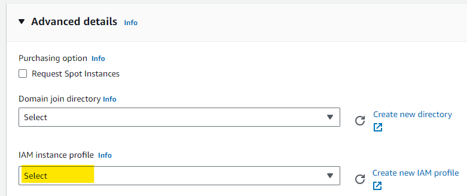

This originally started as a collection of notes I had made after progressively setting up multiple EC2 dev environments. Then I thought it might as well tidy it up 🧹🧼 a bit and push it out as a blog post in the hope it will help others. I plan to progressively add to it, so shout-out 💬 if you have suggestions.
The following is written with the default assumption of a Ubuntu 22.04 LTS base image.
Notes when creating a new EC2 instance
When creating your EC2 instance ensure that under the storage settings that you change the default gp2 to gp3. gp3 has higher baseline performance, adjustable IOPS and throughput. Plus it’s cheaper per GiB ($0.08 vs $0.10/GiB-month) 🤔 hmmm, maybe that is why AWS hasn’t gotten around to changing it to the default when creating EC2 instances.

When you are selecting an instance type, you should check out the ec2-instance-selector and my blog post on Navigating EC2 Pricing - The Better Way
gp3 does now appear to be the default of Amazon Linux AMIs, however gp2 is still the default for Ubuntus AMIs.
Installing AWS CLI
AWS CLI is a must to enable you to transfer files and results between S3 and your EC2 instance
First, you will need to install unzip
sudo apt-get install unzipNow you can download and install the AWS CLI
curl "https://awscli.amazonaws.com/awscli-exe-linux-x86_64.zip" -o "awscliv2.zip"
unzip awscliv2.zip
sudo ./aws/installThis should automatically appear in your path, and you can call it with aws
You will need to configure it with your credentials to grant the necessary permissions 🔑
aws configure
Alternatively, a more secure option is to pass the relevant S3 permissions to your EC2 instance using an IAM instance profile. Details on setting up an IAM role with S3 permissions can be found here.
You can add the IAM profile when first creating your instance under ‘Advanced details’

or to an existing instance by selecting the instance, clicking the ‘Actions’ drop-down menu and then ‘Modify IAM role’ under ‘Security’ and then choosing the relevant IAM role. Then press ‘Update IAM role’.
Mount a secondary volume such as a Nitro NVME SSD
If you launch a storage-optimised EC2 instance such as one from the I4i family to take advantage of the super-fast local storage performance you might get a rude shock at first, where is the SSD 😕? All you initially have access to is the EBS boot volume… Nothing to fear; it is there, it just hasn’t been mounted yet.
use the lsblk command to view your available disk devices and their mount points.
NAME MAJ:MIN RM SIZE RO TYPE MOUNTPOINTS
loop0 7:0 0 24.4M 1 loop /snap/amazon-ssm-agent/6312
loop1 7:1 0 55.6M 1 loop /snap/core18/2745
loop2 7:2 0 63.3M 1 loop /snap/core20/1879
loop3 7:3 0 111.9M 1 loop /snap/lxd/24322
loop4 7:4 0 53.2M 1 loop /snap/snapd/19122
nvme1n1 259:0 0 1.7T 0 disk
nvme0n1 259:1 0 8G 0 disk
├─nvme0n1p1 259:2 0 7.9G 0 part /
├─nvme0n1p14 259:3 0 4M 0 part
└─nvme0n1p15 259:4 0 106M 0 part /boot/efiIdentify the name of the missing drive you want to mount, for example, nvme1n1
Now check whether there is a file system already on the device
sudo file -s /dev/<DRIVE-NAME>If this just shows data as the screen output there is no file system currently on the device. However, if it shows other information for example
[ubuntu ~]$ sudo file -s /dev/nvme1n1
/dev/nvme1n1: SGI XFS filesystem data (blksz 4096, inosz 512, v2 dirs)It means there is already a file system.
Assuming there is no current file system (likely scenario for new instances) you need to make one with the mkfs -t command before you can mount it.
sudo mkfs -t xfs /dev/<DRIVE-NAME>If you get a mkfs.xfs is not found error. You just need to install the XFS tools first using:
sudo apt-get install xfsprog
Once the filesystem is established, all you need to do is mount it and point it at a directory.
You can point it at any directory, but in this example, we are going to create a directory called data
mkdir data
sudo mount /dev/<DRIVE-NAME> /home/ubuntu/dataTo check this has all worked correctly if you run lsblk again you should see your drive of interest show up with the associated mountpoint directory.
NAME MAJ:MIN RM SIZE RO TYPE MOUNTPOINTS
loop0 7:0 0 24.4M 1 loop /snap/amazon-ssm-agent/6312
loop1 7:1 0 55.6M 1 loop /snap/core18/2745
loop2 7:2 0 63.3M 1 loop /snap/core20/1879
loop3 7:3 0 111.9M 1 loop /snap/lxd/24322
loop4 7:4 0 53.2M 1 loop /snap/snapd/19122
nvme1n1 259:0 0 1.7T 0 disk /home/ubuntu/data
nvme0n1 259:1 0 8G 0 disk
├─nvme0n1p1 259:2 0 7.9G 0 part /
├─nvme0n1p14 259:3 0 4M 0 part
└─nvme0n1p15 259:4 0 106M 0 part /boot/efiIt is likely you will need to update the ownership permission of the mounted directory as it would have been mounted as root
To change the permissions to reflect your current user
sudo chown -R $USER /home/ubuntu/dataFor more details visit the aws help page
nvme drives on EC2 instances are typically ephemeral disks, which means they physically exist on the actual host instance and therefore they do not persist after reboots or shutdown (as the new physical host will change). All data will be lost and you will need to remount after a restart.
Resource Monitoring
atop
atop is a Linux tool that provides real-time monitoring and detailed insights into system resource usage, displaying data on CPU, memory, disk, and network activities. It offers a comprehensive overview of processes, their resource consumption, and system-level performance metrics.
However, more importantly, it logs resource usage so you can go back and review CPU and/or memory spikes to determine what is causing errors, or commands to terminate early and whether a different instance size is necessary.
installing atop:
sudo apt-get update
sudo apt-get -y install atop sysstatConfigure atop reporting frequency and what statistics it captures: atop by default logs every 600 seconds (1 min), lets increase that to 60 second to help pick up on memory spikes that might be killing tasks.
sudo sed -i 's/^LOGINTERVAL=600.*/LOGINTERVAL=60/' /usr/share/atop/atop.daily
sudo sed -i -e 's|5-55/10|*/1|' -e 's|every 10 minutes|every 1 minute|' -e 's|debian-sa1|debian-sa1 -S XALL|g' /etc/cron.d/sysstat
sudo bash -c "echo 'SA1_OPTIONS=\"-S XALL\"' >> /etc/default/sysstat"Activate and restart the services:
sudo systemctl enable atop.service crond.service sysstat.service
sudo systemctl restart atop.service crond.service sysstat.serviceatop creates log files in /var/log/atop saves with the format atop_ccyymmdd
To view historical log results, run the command:
atop -r logfileWhere logfile is the path and name of the log file of the relevant day. Once viewing the log results, press tt to move forwards to the next resource usage snapshot and ShiftShift + tt to move back.
Installing the latest stable R on Ubuntu
Step 1: Obtain the R Project GPG Key
To start, you need to acquire the R Project’s public GPG key. This key will ensure the authenticity and security of the software you’re about to install. Open your terminal and use the following command:
wget -qO- https://cloud.r-project.org/bin/linux/ubuntu/marutter_pubkey.asc | sudo gpg --dearmor -o /usr/share/keyrings/r-project.gpg Step 2: Add the R Source List to APT
With the GPG key in place, it’s time to add the R source list to APT. This list is essential for Ubuntu to recognise the repository where R is located. Run the following command:
echo "deb [signed-by=/usr/share/keyrings/r-project.gpg] https://cloud.r-project.org/bin/linux/ubuntu jammy-cran40/" | sudo tee -a /etc/apt/sources.list.d/r-project.list Step 3: Update Your Package List
To make Ubuntu aware of the new source you’ve added, update your package list with the following command:
sudo apt update Step 4: Install R with APT
Now, you’re ready to install R on your system. Execute this command:
sudo apt install --no-install-recommends r-base If prompted to confirm the installation, simply press ‘y’ and then ‘Enter’ to proceed.
That’s it! You’ve successfully installed the latest stable version of R on your Ubuntu machine.
Install relevant R packages
Installing packages in R on Windows is a relatively straightforward process, typically accomplished using the `install.packages()` function. However, the process can be a bit more involved on Linux, as you’ll often need to manually install external system dependencies. In this article, I’ll provide you with essential details for common packages, making the installation process smoother.
In many cases, you’ll find that the ‘make’ command is a fundamental requirement. While you can install ‘make’ as a standalone package, it’s usually more beneficial to install a comprehensive set of build tools through the ‘build-essential’ package.
To install ‘build-essential’ on a Debian-based Linux system like Ubuntu, run the following command in your terminal:
sudo apt-get install build-essentialThe remotes R package provides a simple method to find out what system requirements certain R packages have on linux. Below is an example that lists out the requirements of the tidyverse package.
install.packages("remotes")
remotes::system_requirements(os = "ubuntu", os_release = "20.04", package = "tidyverse")Tidyverse
the tidyverse is a large collection of packages, and therefore, naturally, there is a reasonable list of dependencies. The following should install all the required libraries.
sudo apt install libssl-dev libcurl4-openssl-dev unixodbc-dev libxml2-dev libmariadb-dev libfontconfig1-dev libharfbuzz-dev libfribidi-dev libfreetype6-dev libpng-dev libtiff5-dev libjpeg-dev zlib1g-dev libxml2-dev libfontconfig1-dev libfribidi-dev libharfbuzz-dev libicu-devTo install tidyverse via CRAN:
install.packages("tidyverse")While using remotes to determine dependencies works most of the time, there are still cases where the dependencies are ‘unknown’ until your try and install it. In these scenarios you will need to revert back to the painstaking 🧗 back and forth install dependencies, retry R package installation, install next required dependency and so on… BGLR is one such example 👇
BLGR
The genomic selection package BLGR has a few additional dependencies.
sudo apt-get install libblas-dev liblapack-dev gfortranTo install BGLR via CRAN:
install.packages("BGLR")Posit Package Manager
Shoutout to Josiah for this tip.
If you frequently find yourself installing numerous or large packages, it’s worth exploring the Posit package manager. Among its various features, one stands out— the ability to serve precompiled binary packages tailored for different system environments. This feature proves particularly beneficial when dealing with sizable R packages like dplyr that traditionally require compilation.
To integrate Posit into your workflow, visit the official website at https://packagemanager.posit.co/client/#/repos/cran/setup. Provide your system information, and under ‘Environment,’ choose ‘some other R outside RStudio IDE.’ Now, copy the command listed under ‘Setup Instructions’ and paste it into your R session. It should resemble something similar to the following:
options(repos = c(CRAN = "https://packagemanager.posit.co/cran/__linux__/jammy/latest"))By executing this command, you redirect the install.packages() function to retrieve binaries from the Posit package manager, potentially saving valuable time during installations.
Working with S3 objects within R
If you search for a R packages for working with AWS S3 files within R, you will likely come across aws.s3. It is a great package and makes the process of dealing with S3 file within R super simple. While aws.s3 is great, it doesn’t appear to be maintained anymore and there have been no updates since May 2020. If you are storing your credentials within your EC2 instance with aws configure (which I don’t recommed) then aws.s3 seems to still work great, and many people still use it. However, if you provide your S3 credentials via an IAM profile it appears to be problematic, and the aws.ec2metadata update trick no longer works (mileage for others may vary).
For this reason I suggest you check out paws which is still in active development. It should automatically detect your credentials and there is a code example for downloading and uploading S3 files.
I plan to add an example snippet in time of reading a file directly from S3 into an R object using paws as the process is not as straight forwards as some would expect.
Installing bioinformatic software
PLINK2
Installing plink2 is as simple get grabbing the Linux-64bit Intel zipped binary from the website and unpacking it. Then just move the executable to your bin directory.
For example:
wget https://s3.amazonaws.com/plink2-assets/alpha5/plink2_linux_x86_64_20231011.zip
unzip plink2_linux_x86_64_20231011.zip
sudo mv plink2 /bin/VCFtools
Grab the tarball from the GitHub release page and unpack it.
wget https://github.com/vcftools/vcftools/releases/download/v0.1.16/vcftools-0.1.16.tar.gz
tar -xvf vcftools-0.1.16.tar.gzThe PERL5LIB environment variable needs to be set to include the vcf.pm module.
export PERL5LIB=/path/to/your/vcftools-directory/src/perl/Before you can compile the program you need to install the following dependency
sudo apt install build-essential
sudo apt install pkg-config
sudo apt install zlib1g-devYou can now compile the program.
cd vcftools-0.1.16/
./configure
make
sudo make installVCFtools will be automatically added to your user path so you should now be able to call it with vcftools
BCFtools
A similar process to VCFtools, grab the BCFtools tarball from the latest releases page and run configure, make and install.
What’s next
more to come…